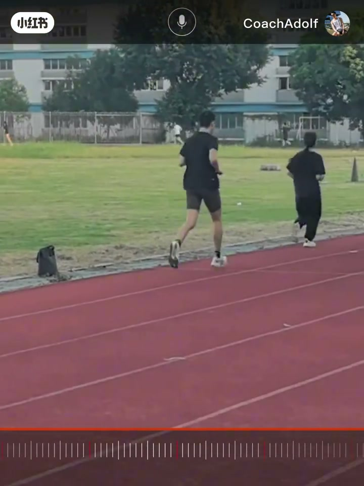
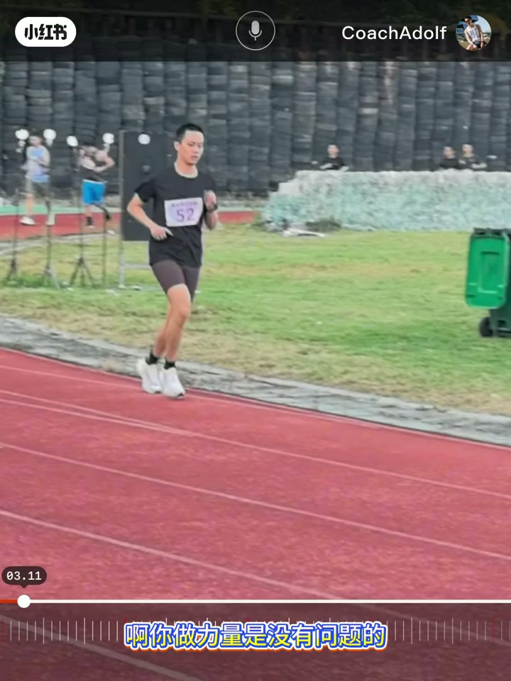
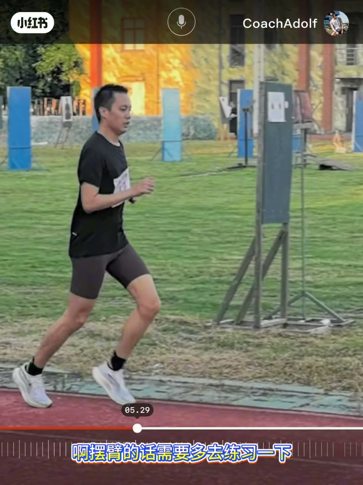
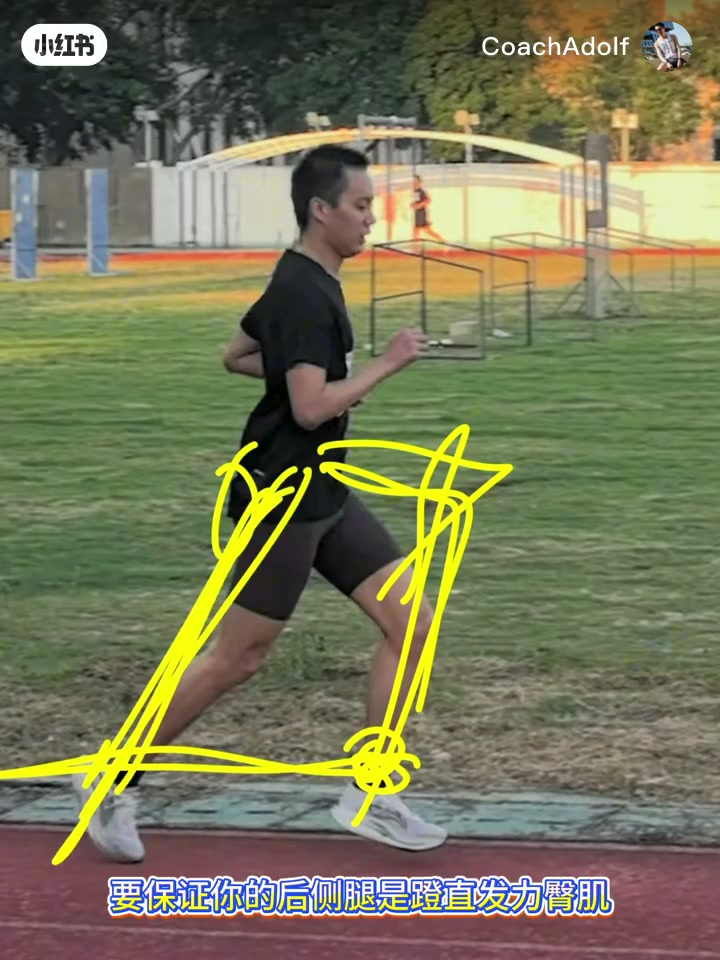
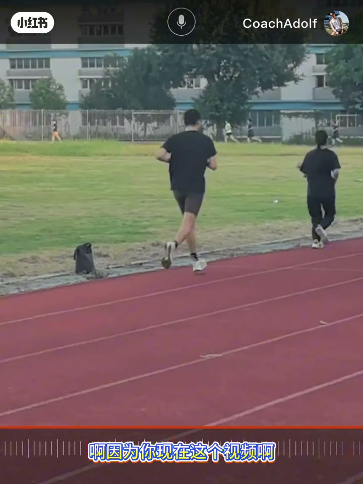
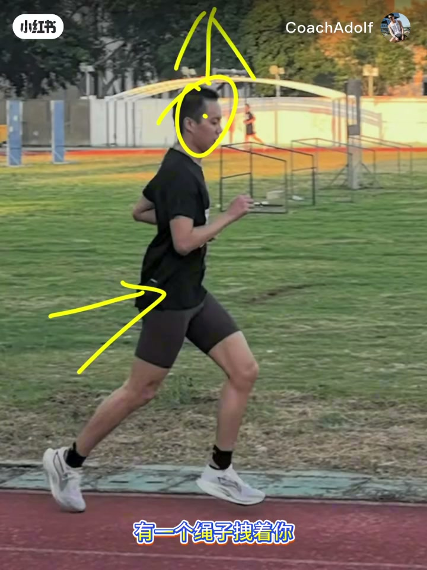

内容要点
CoachAdolf 对照跑者视频逐项纠偏：上半身略含问题不大；摆臂左右不对称；核心是「坐着跑」——髋没送出去、大腿抬不起来、后腿蹬不直。没有腾空常因小腿弹性不足，可用前脚掌纵跳、跳绳、单脚提踵练；并强调膝盖崩直找刚性。最后用「向上被拽、微微前倾」找送髋感觉，并指向「俭康跑」小程序做自测。
知识结构
含胸略有；摆臂左右不对称更影响节奏。
髋不送、膝抬不高、后腿蹬不直→步幅打不开。
前脚掌纵跳/跳绳/提踵；膝崩直，脚后跟着地弹不起来。
重心上提微前倾；四问题：坐着跑、刚性差、小腿没弹性、无腾空。
没有腾空往往不是「不会跳」，而是落地部位与腿部刚性让小腿弹簧接不上力；先练弹性与送髋，再谈步频口号。
00:00-02:30上半身还行，摆臂已经露馅
教练先安抚：上半身稍有含胸/驼背感，相对还可接受。真正要盯的是摆臂——左右不对称，左边高右边低，右臂前摆时身体传递别扭。
这一段建立观察顺序：先排除「看起来很严重其实次要」的上身问题，再把镜头放到四肢对称与发力链。


02:30-05:30坐着跑：髋没送出去，后腿蹬不直
正确示范应是身体送出去、大腿向前抬、膝盖抬高一点，后腿蹬直。跑者现状则是腿迈不开、膝盖抬不起来，臀与后链没力量蹬直——「坐着跑」的直接原因。
教练把原因绑到力量与感觉：不是单纯步频慢，而是髋关节没有真正顶出去发力，步幅与腾空空间被坐姿吃掉。

05:30-08:40没有腾空：把小腿当弹簧用起来
没有弹性、没有腾空，常因小腿没被用上。对比实验：前脚掌触地立刻纵跳能跳起来；换成脚后跟再跳，小腿用不上就弹不起来。
训练菜单：原地纵跳、跳绳、单脚提踵；过程中膝盖尽量崩直、刚住，大腿小腿不要过度弯曲。落地后顺势再起跳，才是有效刺激。


08:40-11:31送髋感觉与四问题清单
送髋：想象上面有绳子拽着，重心向上提、向上拔；身体从脚开始微微前倾，脚落在身体中正下方；落地与后蹬时大腿小腿尽量保持伸直刚性，而不是落地后夹角特别小。
汇总问题：坐着跑、腿部刚性不好、小腿弹性不好、没有腾空。并提到小程序「俭康跑」可查原因、自测、伤病风险与改善方法；部分条目（如小腿无弹性）作者称下版本再补。口播有方言与ASR噪声，动作要点以画面示范为准。

完整转录（156段）
以下文本由 Whisper medium 模型自动转录，可能存在少量识别误差，已尽可能修正。
那我们来总结一下
那我们直接来分析
通过这段视频我们可以看到你整个的上半身
说实话 通过这边看的话
稍稍有一点点的感觉不太后背不太直
有一点点这个拖背
不过相对来说还可以啊
这一般问题不大
那再往下看的话就说你的摆臂
有一点这个左右摆臂
不正常
不对称
左边摆臂高 右边摆臂低
然后你的右臂在向前的时候这样看啊
但你现在是身体是这样的
身体整个还是偏直的
明白吧
正常来说我们的身体应该是这样的才对
是送出去
然后大腿
向前抬
膝盖抬高一点
往前抬 这样的一个情况
后腿登直 对吧
它是这样的一个情况
所以说你看你现在是
腿迈不开
卡尔基
没有力量抬不起来
后腿
国中机 臀后腿没有力量登不直
这也是直接原因
绑在你的膝盖上
然后你原地的进行� .
没有弹性
没有腾空
没有腾空是因为你小腿没有弹性
你的小腿
将你的身体弹不起来
呃
我们的弹性是哪里来的
我们的弹性靠我们的小腿来的
小腿支撑的
啊 它的作用就是弹性
因为你没有将你的小腿利用上
所以说你的整个
跑动过程当中就没有弹性
你自己可以原地试一下
你使用小腿
呃
你使用这个前脚掌去原地纵跳
你前脚掌着地 触地
立即跳你是能够跳起来的
但你如果要是使用脚后腿触地
再上上跳
但你是跳不起来的
啊
当你使用前脚掌的时候
然后你才能够利用到你的小腿
你要是只用你的脚后腿
触地再跳啊
你的小腿
他就利用不上啊
所以说你就跳不起来
啊
所以说你也就没有弹性
明白吧
所以说你要去练你的小腿
具体怎么去练
啊
原地的纵跳啊
跳绳都可以
或者是单脚的这种踢踵啊
单脚的跳都可以
啊
跳的过程当中呢
保证你的膝盖是直的
膝盖崩直
前脚掌落地落地之后
然后顺势再起跳
明白吧
是这样的
然后落下的过程当中呢
你的大腿和小腿不要弯曲
不要弯尽量不要弯啊
尽量崩直
尽量刚住
明白吧
这样的话才能够有效的
锻炼的
但是呢
你不管说是你
不摆臂也好
或者是摆臂横向的摆也好
基本上训练方法
基本上都一样的啊
然后去跟他去做就可以了
宽不下沉啊
没有这个真正的让你的
臀给顶出去啊
没有使用了你的宽发力
然后这里嘛
也是给到一些体能的一些改善方法
啊然后
可以跟他去简单的去练一练啊
但最重要的还是要找到一些
你跑步过程当中的那种感觉
要吧
呃
除了这种跑的话
还有一个就是你的小腿弹性
嗯
这腿刚性小腿过头前身做跳的哦哦
小腿弹性这个好像没有没有
没有疯疯急来啊
然后等到下一个版本啊
然后把我的小程序然后再更新一下
然后加入小腿没有弹性
然后该怎么去练啊
应该是没有啊
刚性脚踝差跳着跑的
跳着跑的就跟你的刚好相反啊
跳着跑是因为他小腿啊
基本就是弹性太好了
啊
ok
啊
那这个就是我的小程序里面跟你讲到的一些问题
好吧
然后你可以跟他去做一做去练一练
那刚才讲到你没有弹性啊
你没有送宽怎么找到这个送宽的感觉
就是你在跑步的过程当中你要找到
像是上面有一个绳子拽着你啊
然后你的整个重心是向上提的
向上拔的啊
这种感觉
然后呢身体从脚开始
微微前倾啊
然后脚落地的时候落在你的身体中下正下方
啊
落地也好
后推蹬身也好
然后保证你的大腿跟小腿基本上都是
有刚性
尽量是属于那种伸直的状态啊
不像是你看你在落地之后啊
你的腿
啊弯的特别厉害
这个角度非常小啊
2个就是坐着跑
第三个就是腿部刚性不太好
第四个就是小腿的弹性不好
2个就是坐着跑
第三个就是腿部刚性不太好2
拜拜